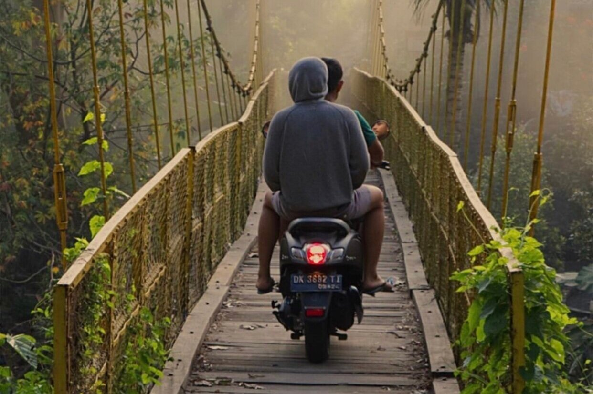
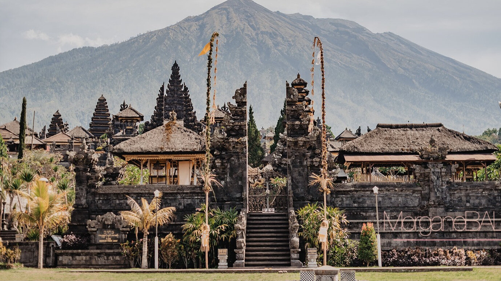

SCOOTER & BIKE TOURS
If there is one thing you must do whilst staying at navya it’s our scooter and bike tours, truly unique ways to see the Sidemen valley - the rice fields, the rivers, Mount Agung, the authentic nese villages and friendly people. Our competent and knowledgeable staff will guide you through the countryside and surrounding villages, safely and at your own pace. This is an experience not to be missed at navya.
CULTURAL TOURS
navya is situated in the traditional Village of Tabola in the Sidemen Valley. Come and experience daily village life with our local staff, learn their traditions visit the local temples and houses and maybe even join in with one of the many fascinating ceremonies. A life of balance, a life of community, a life where joy seems to be the single biggest priority. Let us take you on a guided journey through the many culturally significant sites that has on offer. We even offer guests the opportunity to discover the local food markets with our chef from The Rice Barn
TREKKING & WALKS
Experience a personal guided tour around the local valley and through the lush green rice fields and rivers of the Sidemen Valley. An opportunity to witness the lifestyle of traditional nese people going about their daily lives, see the local farmers tending their lands and feel and see what this amazing scenery has to offer.

RAFTING
navya is situated only a short drive from one of the best rafting rivers in . Explore the beautiful panorama and the extreme current of Telaga Waja river. The distance covered is 14 km and takes approximately 2 hours. Telaga Waja is one of the main rivers used for rafting and has a grading of between 3 and 4.
Besides the extreme water sport in Telaga Waja river, you can also enjoy the beautiful panorama of the mountains, rice fields, and stone cliffs along the streamline. A truly exhilarating experience.